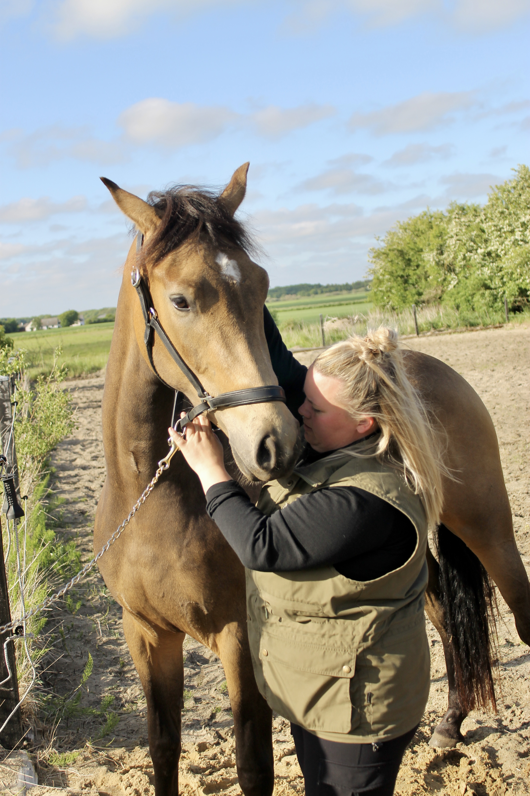

Hesteterapi
Fysiurgisk hesteterapi kan reducere smerte, øge helingsprocessen, styrke hestens generelle velbefindende, og generelt forbedre hestens fysiske og mentale velvære.
Hvordan foregår fysiurgisk hesteterapi?
Fysiurgisk hesteterapi tager udgangspunkt i den enkelte hest, og da ingen heste er ens, bliver hver behandling tilpasset efter hestens behov.
Jeg tager udgangspunkt i hestens anatomi og biomekanik. Jeg starter konsultationen med at lokalisere spændinger og restriktioner ud fra ganganalyse, muskelanalyse og en undersøgelse af hestens krop.
Dialogen med dig som hesteejer spiller en vigtig rolle i afbalanceringen, da dine observationer af hesten og hestens daglige rutiner, kan give en værdifuld indsigt i, hvordan din hest trives og bevæger sig i hverdagen.
Teknikker
Teknikkerne jeg bruger, er med til at afspænde muskler, forbedre blodcirkulationen og øge mobiliteten hos vores firbenede venner.
Priser
*Denne behandling kan bookes hvis man har været til første konsultation
Hvilke hunde har gavn af fysiurgisk hundeterapi?
Ligesom os kan vores firbenede venner også have spændinger eller restriktioner i kroppen, og dette kan fysiurgisk hundeterapi afhjælpe.
Jeg laver afbalancering på heste:
Indskrænket bevægelse
Muskelspændinger
Stivhed
Manglende evne til at udføre en bestemt øvelse
Genoptræning efter skade
Adfærdsændringer/problemer
Eller blot som vedligeholdelse af hestens krop, unge som gamle heste samt ved henvisning fra dyrlægen.
Jeg laver ikke afbalancering på heste:
XMed feber og infektioner
XVed akut inflammation
XVed direkte på hævelser eller fibersprængninger
XHvis der er mindre end 48 timer til deltagelse i udstilling, konkurrence eller anden præstation.
XLokalt på hudproblemer
XVed cancer eller ikke-diagnosticerede knuder
XVed drægtighed
Der vil i ovenstående være tilfælde hvor en fysiurgisk hesteterapeut kan hjælpe efter at en dyrlæge har tilset hesten. Dette vil være et samarbejde mellem dyrlægen og hesteterapeuten.
Lad LM Hunde- og Hestefokus hjælpe din hest med at opnå optimal sundhed og livskvalitet gennem fysiurgisk hesteterapi!
Find eller kontakt mig!
Har du spørgsmål til lokation eller vil du vide mere om træn-inger og terapier?
Jeg er klar til at hjælpe.
Din hund fortjener velvære og fri bevægelse
Med fysiurgisk terapi hjælper jeg din hest til et sundere og gladere liv – på deres præmisser. Fysiurgisk behandling er ikke kun til skader – det er også til dig, der vil passe på din hests krop før problemerne opstår.